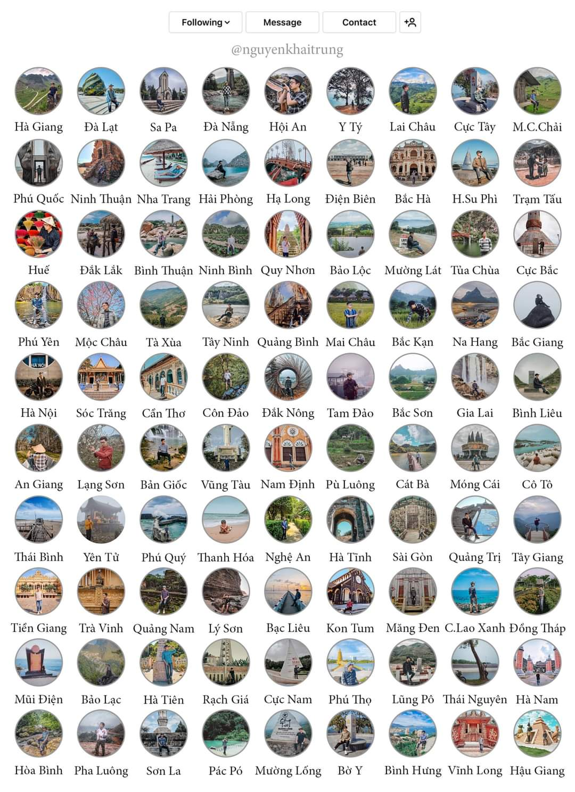

1.vị trí thời tiết
Việt Nam là một quốc gia nằm ở Đông Nam Á và có một địa hình đa dạng, từ vùng biển và bãi biển dài, đến núi non và thung lũng. Điều này dẫn đến sự biến đổi thời tiết đáng kể trên toàn quốc. Dưới đây là một số điểm quan trọng về địa lý thời tiết của Việt Nam: Bắc Bộ: Vùng Bắc Bộ nằm ở phía bắc của Việt Nam và bao gồm Hà Nội, Hải Phòng và các tỉnh lân cận. Thời tiết ở vùng này chịu ảnh hưởng của mùa đông khá lạnh và mùa hè nóng ẩm. Mưa nhiều tập trung vào mùa hè, trong khi mùa đông thường khá khô. Trung Bộ: Vùng Trung Bộ nằm ở giữa đất nước và có thời tiết khá nắng nóng vào mùa hè. Mưa thường tập trung vào mùa mưa, từ tháng 5 đến tháng 10. Nam Bộ: Vùng Nam Bộ bao gồm các tỉnh phía nam của Việt Nam, bao gồm TP.HCM và Cần Thơ. Thời tiết ở đây ẩm ướt và nhiệt đới, với mùa mưa chính thường xảy ra từ tháng 5 đến tháng 11. Tây Nguyên và Miền Tây: Vùng Tây Nguyên nằm ở trung tâm Việt Nam, trong khi Miền Tây là vùng đồng bằng Mekong nằm ở phía tây nam. Thời tiết ở đây có mùa khô và mùa mưa rõ rệt. Miền núi phía bắc và phía nam: Việt Nam có nhiều dãy núi, như dãy Trường Sơn phía bắc và dãy núi Annam phía nam. Thời tiết ở các vùng núi này thường khá lạnh và mưa nhiều vào mùa mưa. Tóm lại, thời tiết ở Việt Nam có sự biến đổi theo mùa và vùng miền. Việt Nam thường trải qua bốn mùa rõ rệt: xuân, hạ, thu và đông. Để biết thông tin thời tiết cụ thể cho một khu vực cụ thể, bạn nên tìm kiếm thông tin từ các dự báo thời tiết địa phương hoặc trang web chính thống về thời tiết.
2.Thực phẩm và đặc sản
một chuyến đi đầy đủ ý nghĩa là khi được trải nghiệm đầy đủ các món ăn các đặc sản từng vùng miền
Việt Nam là một quốc gia với nền ẩm thực đa dạng, và mỗi vùng miền đều có những món đặc sản riêng biệt. Dưới đây là danh sách một số món ăn đặc sản từng vùng miền của Việt Nam:

Miền Bắc
1 Bún chả: Bún chả là một món ngon và phổ biến ở Hà Nội. Nó bao gồm thịt lợn nướng và thịt lợn sườn ăn kèm với bún và nước mắm pha chua ngọt.
2 Phở: Phở là một trong những món ăn nổi tiếng của Việt Nam. Đây là một món súp mì với nước dùng từ xương gà hoặc bò, ăn kèm với thịt và nước mắm.
Miền Trung
1 Bánh xèo: Bánh xèo là một loại bánh mỏng, giòn, được làm từ bột gạo và bánh mì, và nấm. Nó thường được ăn kèm với rau sống và nước mắm pha chua ngọt.
2 Bún bò Huế: Bún bò Huế là một món súp mì có nguồn gốc từ thành phố Huế. Nó thường được nấu từ xương bò và thịt bò, cùng với bún và rau sống.
Miền Nam
1 Cơm tấm: Cơm tấm là một món ăn phổ biến ở miền Nam. Nó bao gồm cơm trắng ăn kèm với thịt nướng, trứng ốp la, mỡ hành, và nước mắm.
2 Hủ tiếu Nam Vang: Hủ tiếu Nam Vang là một món súp mì có nguồn gốc từ người Hoa ở miền Nam. Nó bao gồm mì sợi, thịt lợn hoặc tôm, và nước dùng.
3 Gỏi cuốn: Gỏi cuốn là một món ăn mỏng và nhẹ, thường được làm từ tôm, thịt gà hoặc thịt lợn, bánh tráng, và rau sống. Nó thường được ăn kèm với nước mắm hoặc sốt đậu phụ.
4 Bánh mì Hòa Phát: Bánh mì Hòa Phát là một loại bánh mì thịt phô mai ngon và nổi tiếng tại Sài Gòn.
Ngoài ra, có nhiều món ăn đặc sản khác từng vùng miền của Việt Nam, và những món này thường thể hiện sự đa dạng và phong cách ẩm thực độc đáo của từng khu vực.
3.Các điểm đến phổ biến của các vùng miền
Việt Nam có nhiều điểm đến phổ biến và độc đáo trong từng vùng miền. Dưới đây là một số điểm đến nổi tiếng ở từng miền của Việt Nam:
Miền Bắc
1 Hà Nội: Thủ đô của Việt Nam là một thành phố đáng yêu với lịch sử lâu đời và kiến trúc cổ kính. Khách du lịch có thể tham quan Hoàng Thành Thăng Long, Hồ Gươm, và thưởng thức các món ăn đặc sản như phở và bún chả.
2 Sapa: Sapa là một vùng núi tại tỉnh Lào Cai, nổi tiếng với cảnh quan thiên nhiên tuyệt đẹp, rừng nguyên sinh, và các bản làng dân tộc thiểu số.
Miền Trung
1 Đà Nẵng: Đà Nẵng là một thành phố du lịch biển nổi tiếng với bãi biển Mỹ Khê, bán đảo Sơn Trà, và nhiều công trình kiến trúc đẹp như cây cầu cá và đền Linh Ứng.
2 Hội An: Hội An là một cố đô cổ với kiến trúc kiến trúc cổ điển, những con đường đá cẩm thạch, và đèn lồng. Nơi đây còn nổi tiếng với thực phẩm đường phố và thời trang thủ công.
Miền Nam
1 TP.HCM (Sài Gòn): Thành phố Hồ Chí Minh là trung tâm kinh tế và văn hóa của Việt Nam. Khách du lịch có thể thăm Nhà thờ Đức Bà, Cung điện Thống Nhất, và tham gia vào cuộc sống sôi động của thành phố.
2 Cần Thơ: Cần Thơ nằm ở Mekong Delta và nổi tiếng với những kênh nước, chợ nổi Cái Răng, và cảnh quan xanh mướt. Đây cũng là nơi du khách trải nghiệm cuộc sống ven sông và tham gia vào các hoạt động thú vị.
Ngoài ra, Việt Nam còn có nhiều điểm đến khác như Bảo Đại Villa ở Đà Lạt, Vịnh Hạ Long ở miền Bắc, và nhiều cánh đồng lúa nước tại miền Delta Mekong. Tùy theo sở thích của bạn, bạn có thể lựa chọn điểm đến phù hợp với mình trong cả nước.
4.Văn hóa lễ hội
Việt Nam có một loạt các lễ hội và nghi lễ truyền thống độc đáo ở từng vùng miền, phản ánh sự đa dạng văn hóa và truyền thống của đất nước
Đến Việt Nam nhất định phải tham gia vào các lễ hội truyền thống tiêu biểu như Tết Nguyên Đán

ngoài ra các vùng miền của việt nam còn rất nhiều các lễ hội tiêu biểu của từng vùng miền
Miền Bắc
1 Lễ hội Đền Hùng (Lễ hội Giỗ Tổ Hùng Vương): Lễ hội này diễn ra ở Phú Thọ và là cơ hội để người dân Việt Nam tưởng nhớ và tôn vinh Tổ Hùng Vương, người được xem là người sáng lập nền văn minh Việt Nam.
2 Lễ hội bánh chưng bánh giầy: Lễ hội này thường diễn ra vào dịp Tết Nguyên Đán và liên quan đến việc nấu bánh chưng và bánh giầy, hai món ăn truyền thống của Tết.
Miền Trung
1 Lễ hội biển Cửa Lò - Nghệ An: Lễ hội này được tổ chức hàng năm để tôn vinh biển và thể hiện tình yêu biển của người dân địa phương.
2 Lễ hội đua thuyền nước ở Huế: Lễ hội này kéo dài trong mùa lễ hội Trung Thu và bao gồm các cuộc đua thuyền nước truyền thống trên sông Hương.
Miền Nam
1 Lễ hội nước Tết (Lễ hội xuân ở Sài Gòn): Lễ hội này diễn ra trong dịp Tết Nguyên Đán và bao gồm các hoạt động văn hóa truyền thống như múa lân, múa rồng, và hội chợ xuân.
2 Lễ hội Ok Om Bok ở Sóc Trăng: Lễ hội này được tổ chức bởi người Khmer và liên quan đến lễ tạ ơn đối với nước và các loại cây trồng.
5.An toàn, Giao thông, di chuyển
Luôn giữ giấy tờ cá nhân và giấy phép lưu trú khi đi du lịch.
Tại các thành phố lớn, bạn có thể sử dụng các phương tiện như taxi, Grab hoặc xe ô tô riêng. Đi lại bằng xe máy cũng phổ biến, nhưng hãy cẩn thận khi tham gia giao thông.